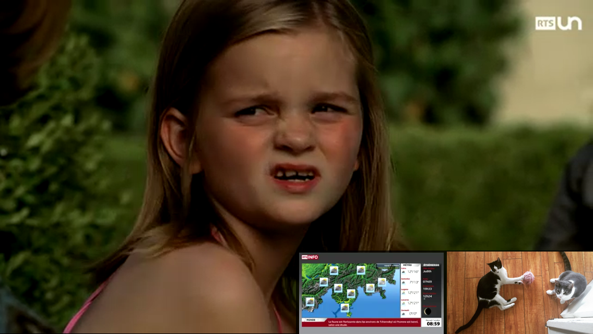

class: center, middle # SRGMediaPlayer an easy-to-use, modularized, open-source, bi-platform Media Player. [github.com/SRGSSR](http://github.com/SRGSSR) <br/> __Presenters :__ Sébastien Chauvin, Cédric Foellmi <br/> __SRGMediaPlayer Team:__ <div class="container"> <div class="row"> <div class="team_member col-md-1"> <h4 class="team-member__name">Axel Deblasi</h4><p class="twitter_handle">@deblazz</p> </div> <div class="team_member col-md-1"> <h4 class="team-member__name">Cédric Lüthi</h4><p class="twitter_handle">@0xced</p> </div> <div class="team_member col-md-1"> <img class="img-circle" src="EBU_DevCon_2015_Images/nicolapietri.png" width=60 alt="..."> <h4 class="team-member__name">Nicolas Pietri</h4><p class="twitter_handle">@Pi3tPiet</p> </div> <div class="team_member col-md-1"> <h4 class="team-member__name">Sébastien Chauvin</h4><p class="twitter_handle"></p> </div> <div class="team_member col-md-1"> <h4 class="team-member__name">Samuel Defago</h4><p class="twitter_handle">@defagos</p> </div> <div class="team_member col-md-1"> <img class="img-circle" src="EBU_DevCon_2015_Images/..." width=60 alt="..."> <h4 class="team-member__name">Frédéric Humbert-Droz</h4><p class="twitter_handle">@fredhdroz</p> </div> <div class="team_member col-md-1"> <h4 class="team-member__name">Pierre-Yves Bertholon</h4><p class="twitter_handle">@pyby85</p> </div> <div class="team_member col-md-1"> <h4 class="team-member__name">Cédric Foellmi</h4><p class="twitter_handle">@onekiloparsec</p> </div> </div> </div> --- # Agenda 1. Why another media player? 2. The SRG Media Player architecture 3. Showcase and Demos 4. Hands-on lab --- # Why another media player? 1. Modularity 2. Need to share work and benefits between teams 3. Adaptability and flexibility --- # Why another _Android_ media player? <img src="EBU_DevCon_2015_Images/icon-android.png" width=50 alt="..."> - Easily encapsulate and change underlying media player - Share more than a media player --- # Choice of underlying media player <img src="EBU_DevCon_2015_Images/icon-android.png" width=50 alt="..."> We tried multiple media playing solutions: - Native player _no HLS, super slow audio buffering_ - ExoPlayer (Google / YouTube) _a bit complex, HLS not fully supported_ - Akamai SDK _commercial, no documentation, slow seek_ --- # Changes to ExoPlayer <img src="EBU_DevCon_2015_Images/icon-android.png" width=50 alt="..."> - Stability enhancements for Samsung devices and our HLS streams _(pull request pending)_ - HLS DVR _(in progress)_ --- # Share more than a basic player <img src="EBU_DevCon_2015_Images/icon-android.png" width=50 alt="..."> We wanted to share more between projects - Statistics - Player controls - Meta data loading, storage and display - Segment load and display - Background play with notifications - Chromecast / Airplay And we did not want a monolithic Activity doing all the above (in Play the VideoPlayerActivity is 500 lines long) --- # Why another _iOS_ media player? Search for "media player ios" on GitHub leads to 36 results... But few repos contain true players, and even fewer are easily customisable... --- # The _iOS_ media players landscape (simplified)? * __MPMoviePlayerController__: Really easy to use but quite hard to customize. * <font color='#BBBBBB'>Hey, your guess...</font> * __AVPlayer__: Full control on (almost) everything, but low-level and lot of work to achieve a complete experience --- # The _iOS_ media players landscape (simplified)? * __MPMoviePlayerController__: Really easy to use but quite hard to customize. * __SRGMediaPlayer__<font color='green'>: High-level, fully customisable, and (hopefully) fairly easy-to-use (We'll see at the Hands-on lab!)</font> * __AVPlayer__: Full control on (almost) everything, but low-level and lot of work to achieve a complete experience --- # The SRG Media Player architecture 1. __Core__ Has the unique role of media playback. 2. __Data provider__ protocol for obtaining the media URL (local or remote), identified by a unique string identifier. 3. __Overlays__ controls, branding elements and even other players (see demo) <br/> __Features__: Segmented media, audio background modes, video timeshift, inline player, statistics / analytics. The SRGMediaPlayer comes with its demo project. --- # Showcase and Demos Currently, the SRGMediaPlayer is used in: 1. RTSsport, 2. Play Apps (SRF, RTS, RSI, RTR, SWI), 3. RTSkids for Android. --- # Showcase : Multi-Live!  --- # Questions? --- # Hands-on lab Repo: [http://github.com/SRGSSR](http://github.com/SRGSSR) # Suggested goal - Create an empty app - Add the player component - Write a custom data provider (static URL) - Screen with just a Play button - _we are already playing a media_ - Add a player window - _we can see the video_ - Add a playlist interface to the data provider - Add a custom overlay to enable next / previous in the playlist - _we can navigate in the media playlist_